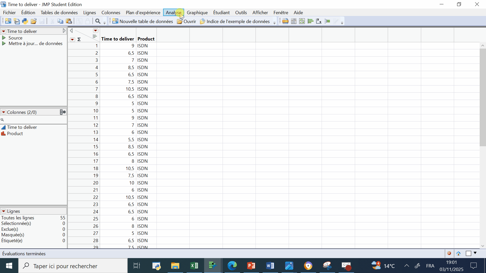

Procédure 30 · Tests d’hypothèses
Kruskal–Wallis / Wilcoxon
Procédure pas à pas
- Ouvrir Analyse → Ajuster Y en fonction de X.
- Placer le délai de livraison dans Y et le produit dans X.
- Dans le triangle rouge de l’analyse à un facteur, ouvrir Non paramétrique.
- Choisir Kruskal-Wallis / Wilcoxon.
- Lire la p-value et conclure sur les distributions, sous les hypothèses du test.
Télécharger les données pour JMP
Ouvrir ce fichier dans JMP, puis suivre les étapes de la procédure et les animations associées.
↓ Télécharger Time to deliver.XLSFormat .XLS ; fichier d’exercice original, sans modification.
Jeu de données / résultat
Fichier cité : Time to Deliver.xls
Point de vigilance : Le test de Kruskal–Wallis ne teste les médianes directement que sous des hypothèses supplémentaires sur les formes des distributions.
Démonstrations animées dans JMP
Animations extraites du PowerPoint « Lean Six Sigma avec JMP 003 ». Elles complètent les étapes numérotées ci-dessus.
